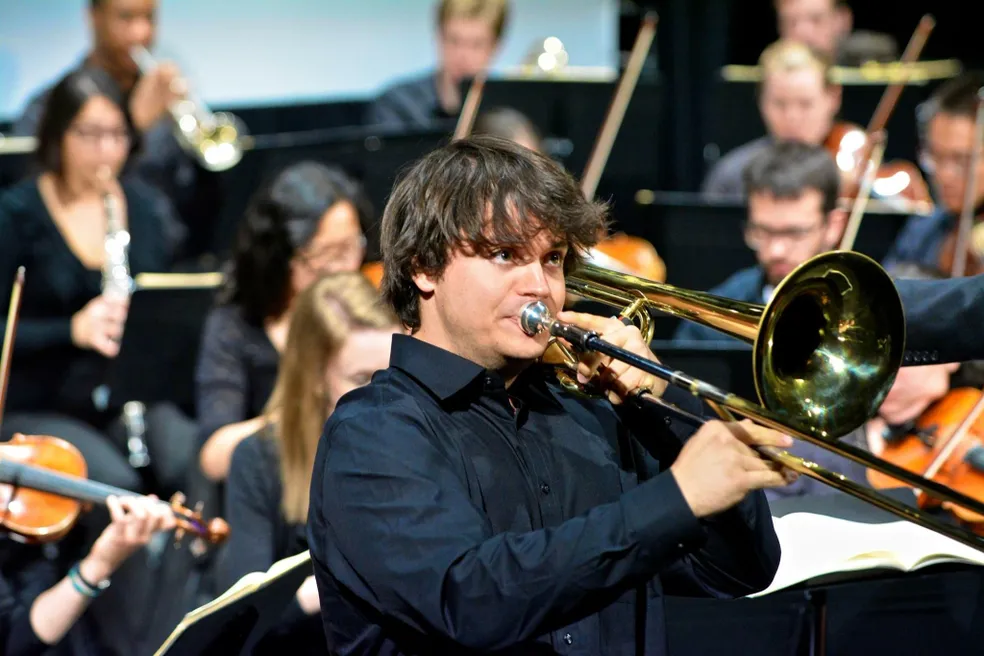

|  |
Jon GauerJon Gauer is a Denver-based working musician who's equally at home in the symphony orchestra, jazz ensemble, brass quintet, or rock & roll band. His experience includes over a decade of professional performances and a discography of more than 20 studio albums. Gauer studied at the University of North Texas (MM '15/BM '13), where he was a Graduate Teaching Fellow and a member of the One O'Clock Jazz Lab Band. |